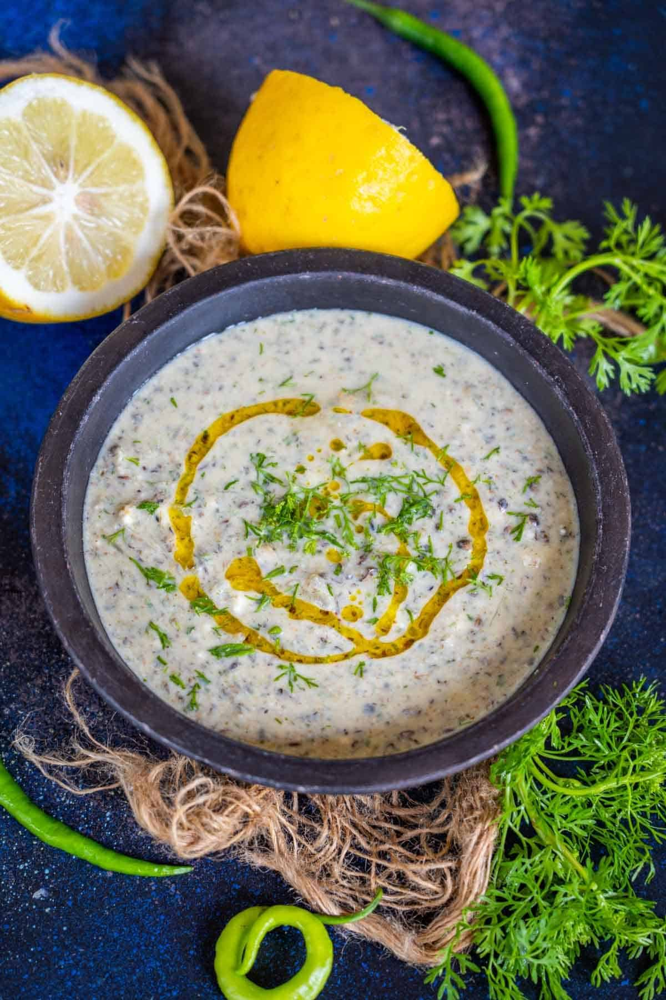

"Cold weather, warm memories."
Ingredients
- Lemon
- Salt
- Spices
- Mustard oil
Steps & Emotions
- Cut lemons and seperate the inner part into smaller pieces - sharp freshness
- Add special pahadi (roasted cumin seeds,green chillies,bhang,salt) - reality hits
- Add spices - life gets bold
- Mix well with curd - blending moods
- Add fruits or salad as per your taste ( radish,pomogrenate,guavas are more common) - patience builds
- Smell rises - nostalgia
- You can Serve with musturd oil too but I personally prefer it without it- warmth spreads
- Taste - feels like home
Time: 10 mins | Difficulty: Easy